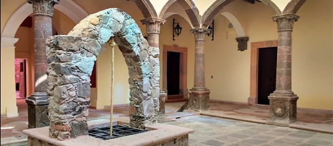

Un sueño hecho realidad
Hay momentos que
para siempre.
Mis XV años serán un sueño hecho realidad, y quiero que formes parte de este capítulo único en mi vida.
Acompáñame a celebrar una noche llena de alegría, música y recuerdos.
Con cariño, Karol Mayte
Quienes hacen posible este sueño
Con el amor
Mi padrino
Mario Alejandro Ramírez Monroy
Reserva este día para mí
Una fecha,
2:00 PM
Un día muy especial para mí.
Cada vez falta menos
Contando los días
—
DÍAS
—
HORAS
—
MINUTOS
—
SEGUNDOS
Los lugares donde celebraremos
Nos vemos
aquí
Misa de XV años
Templo de la
Dolores Hidalgo, Gto.
Cita 2:00 p. m. en el salón
Si me acompañas a misa, te espero a las 2:00 p. m. en el salón, a dos cuadras del templo. Saldré a caballo y me acompañarás caminando hasta el templo, con la banda y los caballos.
Cómo llegar

Recepción
Hotel Casa
Nuevo León 7, Zona Centro,
Hora por confirmar
Cómo llegar
Así celebraremos
Un día para
recordar
Cita en el salón: 2:00 PM · Caminata al templo · Misa · Recepción · Vals · Cena · Baile — demás horarios por confirmar.
Código de vestimenta
Elegancia en
Formal
Mujeres: Vestido largo.
¡No olvides tu abrigo!, puede bajar la temperatura en la madrugada.
Detalles con cariño
Tu presencia es
Tu compañía es lo que más deseo. Si quieres darme un detalle, te comparto estas opciones:
Mesa de regalos
Por confirmar
Lluvia de sobres
Es la tradición de regalar dinero en efectivo dentro de un sobre.
Datos para transferencia
Por confirmar
Compartiremos los datos muy pronto.
Recuerdos para compartir
Comparte
Me encantará ver la fiesta a través de tus ojos. Comparte tus fotos con mi hashtag.
#XVKarolMayte2026
Ver en Instagram
Confirmación
¿Me acompañas?
Me hará muy feliz compartir este día contigo. Confírmame tu asistencia para preparar todo con mucho cariño.
Asistiré
No podré asistir
Confirmar asistencia
Confirma tu asistencia lo antes posible
Una noche para atesorar
Gracias por ser parte
♡
Karol Mayte
26 · 12 · 2026